RDR2 세션 관리자 설치 가이드
윈도우 디펜더에 의해 업데이트가 실패하는 것을 방지하기 위한 설치법입니다.
현재 상황에 맞게 탭을 선택하여 진행해 주세요.
윈도우 디펜더에 의해 업데이트가 실패하는 것을 방지하기 위한 설치법입니다.
현재 상황에 맞게 탭을 선택하여 진행해 주세요.
원하는 위치(바탕 화면, 문서, D드라이브 등)의 빈 공간을 우클릭하여 [새로 만들기] ➔ [폴더]를 선택합니다.
(폴더의 위치와 이름은 자유롭게 정할 수 있으며, 본 가이드에서는 바탕 화면에 '세션관리자' 폴더를 생성한 것으로 예시를 들어 설명합니다.)
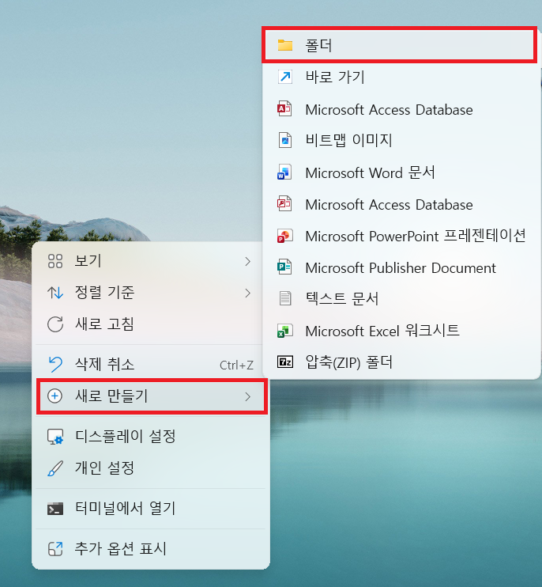
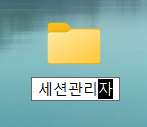
키보드에서 [Windows키 + S] 또는, Windows 작업 표시줄의 시작 단추나 검색창을 클릭한 후 보안을 입력합니다.
검색 결과 상단에 나타나는 Windows 보안 앱을 클릭하여 실행합니다.
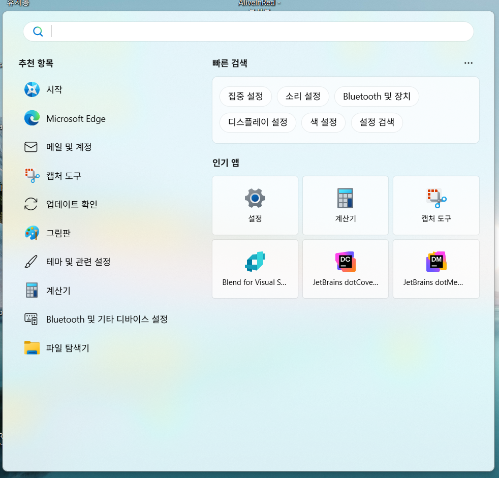
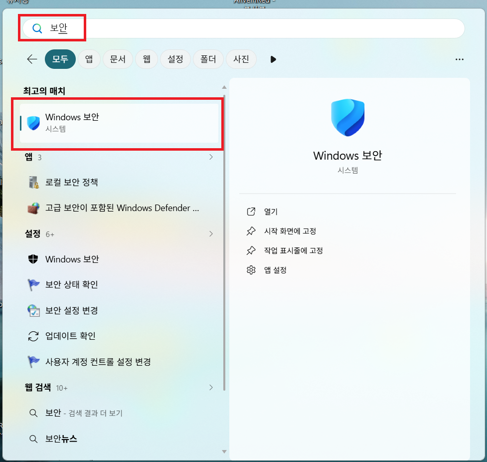
Windows 보안 앱 화면 왼쪽의 방패 모양 아이콘인 바이러스 및 위협 방지 탭을 클릭합니다.
그 후 오른쪽 화면을 아래로 스크롤하여 [제외] 항목 하단의 제외 추가 또는 제거를 클릭합니다.
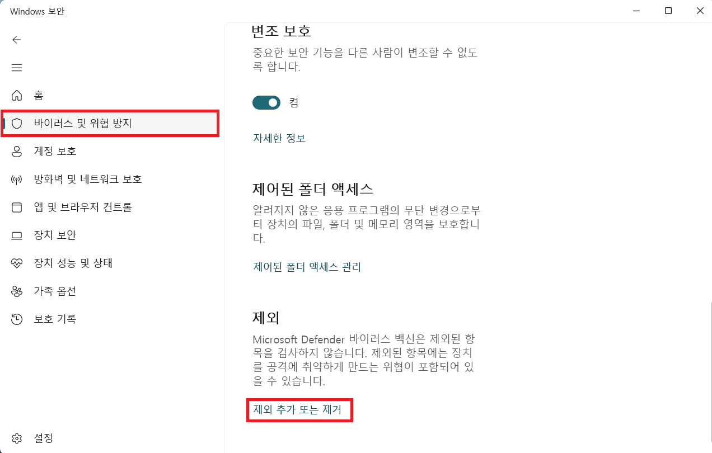
[+ 제외 사항 추가] 버튼을 누르고 드롭다운에서 폴더를 선택합니다.
폴더 선택 대화상자에서 본인이 직접 생성했던 전용 폴더(예시: 바탕 화면의 세션관리자)를 선택하고 [폴더 선택]을 누릅니다.
제외 목록에 해당 폴더의 전체 경로(예시: C:\Users\컴퓨터 계정명\Desktop\세션관리자)가 올바르게 등록되었는지 녹색 상자처럼 확인합니다.
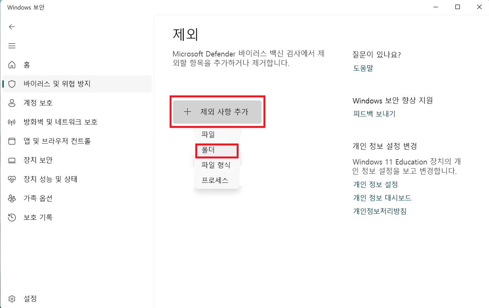
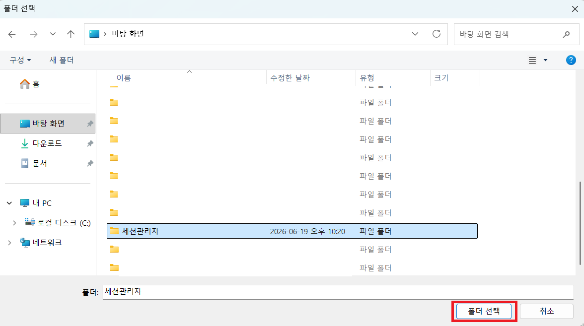
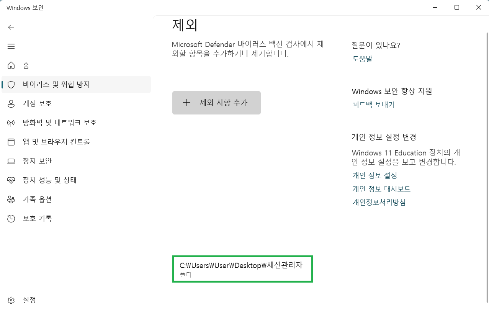
세션 관리자 다운로드 페이지로 이동한 후, 화면 중앙의 빨간색 다운로드 버튼을 눌러 최신 압축 파일(`.zip`)을 저장합니다.
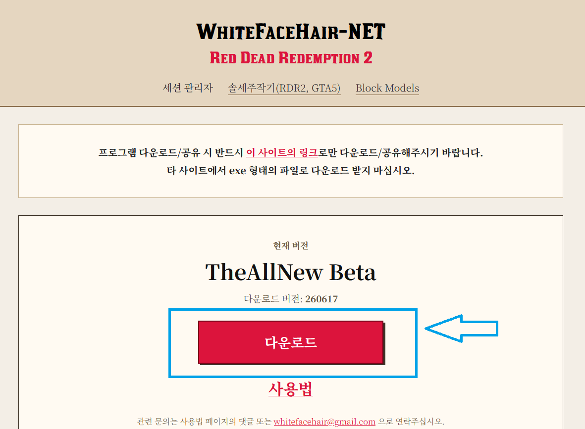
웹 브라우저를 통해 다운로드한 압축 파일(예: sessionmanager_260617.zip)을 복사하거나 잘라내어,
방금 제외 설정으로 등록했던 본인의 전용 폴더(예시: 세션관리자) 내부로 이동시킵니다.
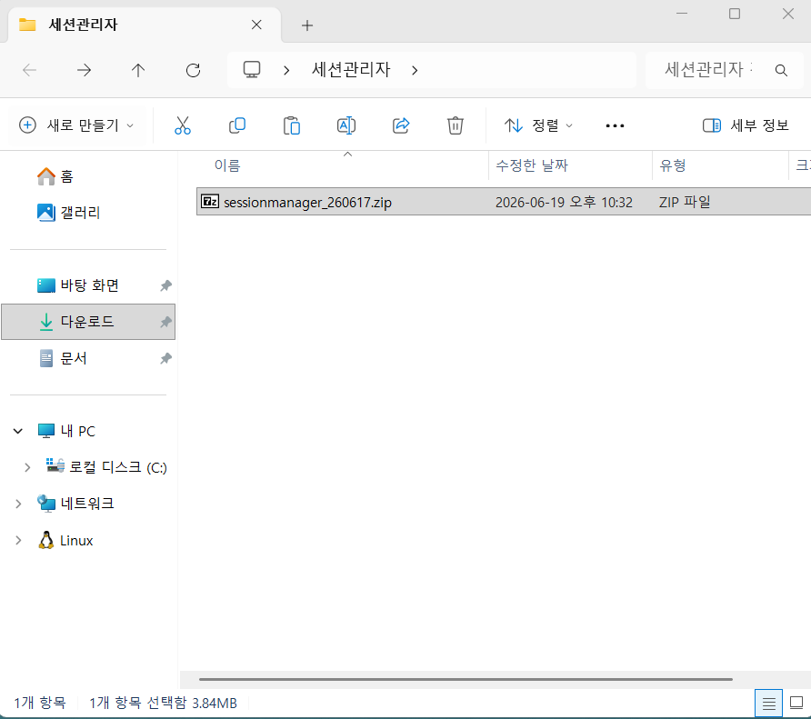
폴더 안의 압축 파일을 마우스 우클릭하고 [압축 풀기...]를 클릭합니다.
압축 해제 대상 폴더의 경로가 본인이 생성한 폴더의 전체 경로(예시: C:\Users\컴퓨터 계정명\Desktop\세션관리자)인지 확인한 뒤, 하단의 [압축 풀기(E)] 버튼을 클릭합니다.
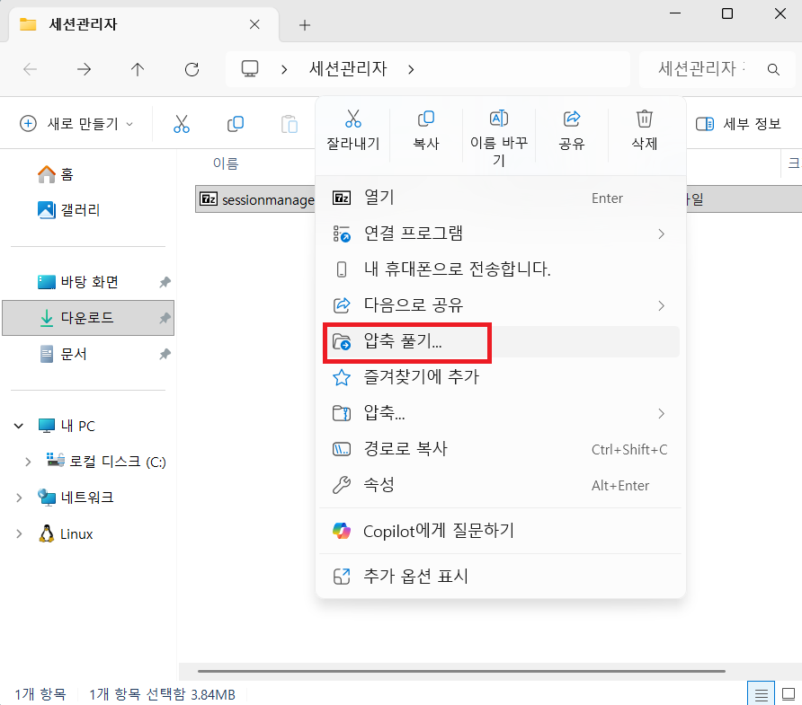
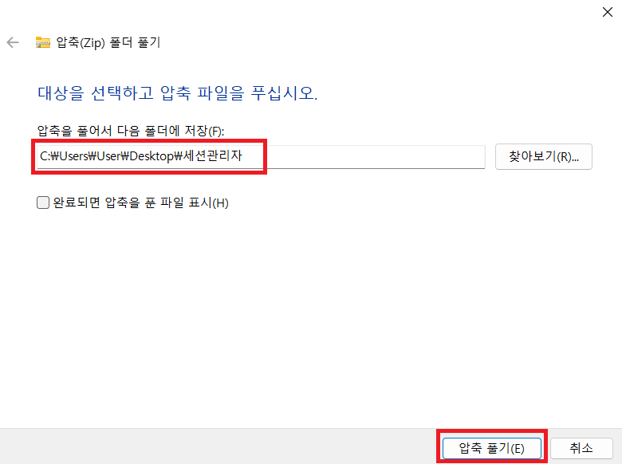
압축이 완료되면 나타나는 파일 목록 중 sessionmanager.exe 파일이 정상 압축 해제되었는지 확인합니다.
매번 폴더를 열지 않고 편리하게 실행할 수 있도록, 해당 파일을 우클릭하여 [추가 옵션 표시] ➔ [보내기(N)] ➔ [바탕 화면에 바로 가기 만들기]를 차례대로 클릭합니다.
바탕 화면에 생성된 바로 가기(단축) 아이콘을 통해 프로그램을 안전하게 실행해 사용하실 수 있습니다.
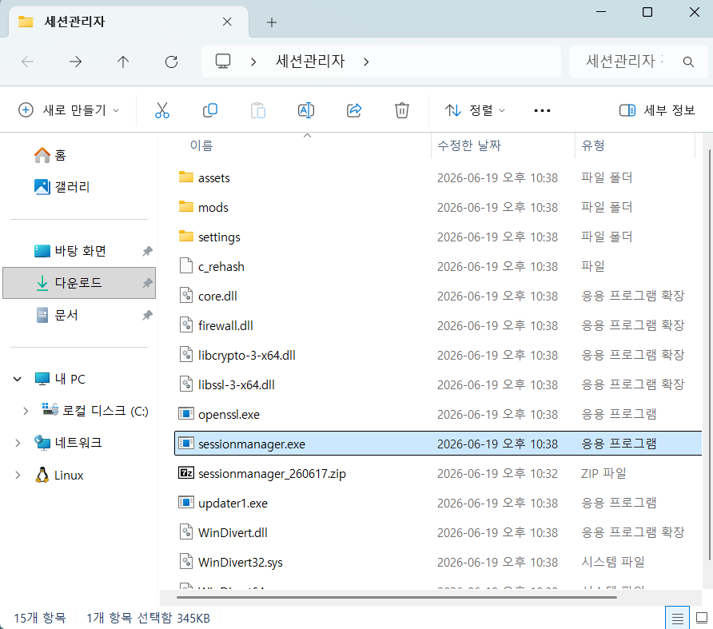
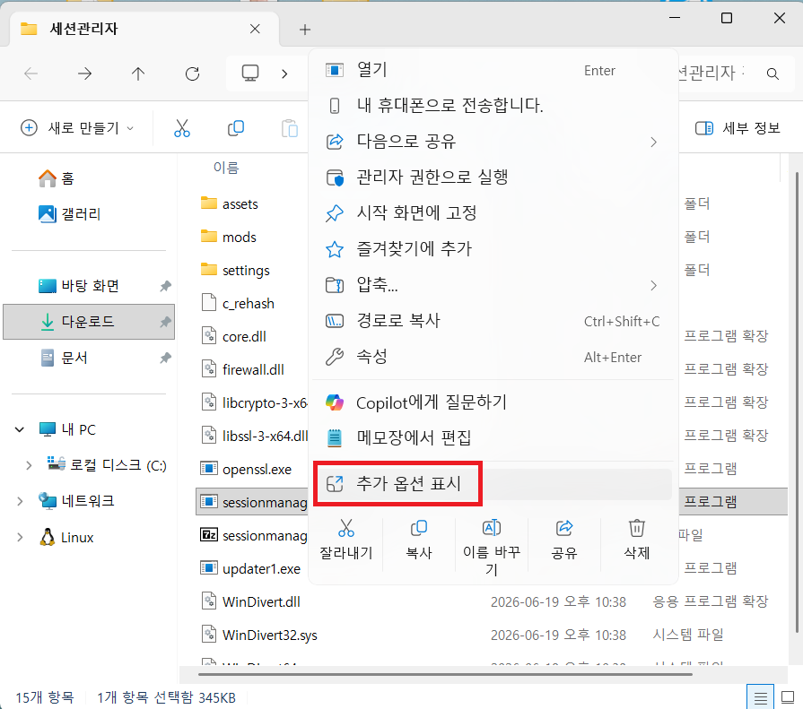
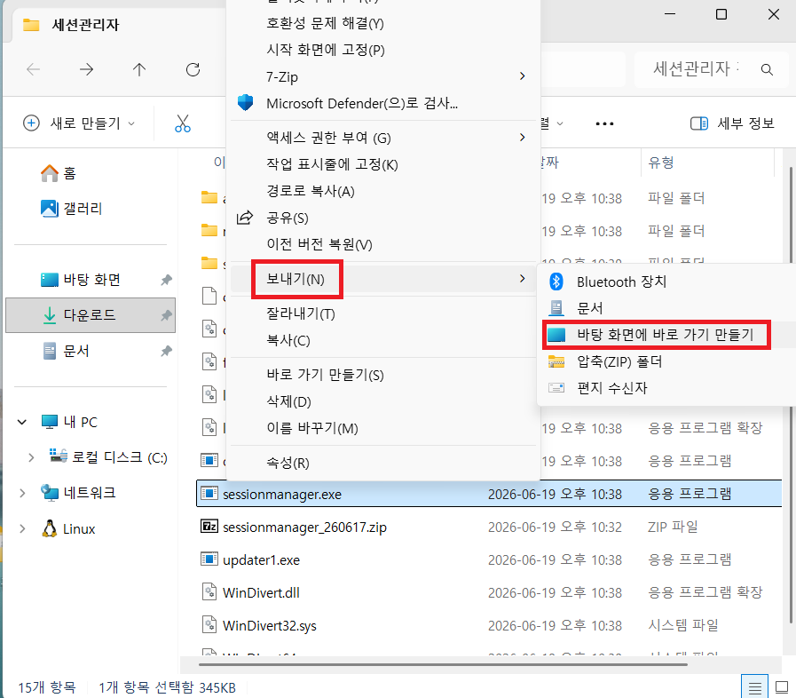
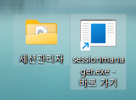
원하는 위치(바탕 화면, 문서, D드라이브 등)의 빈 공간을 우클릭하여 [새로 만들기] ➔ [폴더]를 선택합니다.
(폴더의 위치와 이름은 자유롭게 정할 수 있으며, 본 가이드에서는 바탕 화면에 '세션관리자' 폴더를 생성한 것으로 예시를 들어 설명합니다.)
키보드에서 [Windows키 + S] 또는, Windows 작업 표시줄의 시작 단추나 검색창을 클릭한 후 보안을 입력합니다.
검색 결과 상단에 나타나는 Windows 보안 앱을 클릭하여 실행합니다.
Windows 보안 앱 화면 왼쪽의 방패 모양 아이콘인 바이러스 및 위협 방지 탭을 클릭합니다.
그 후 오른쪽 화면을 아래로 스크롤하여 [제외] 항목 하단의 제외 추가 또는 제거를 클릭합니다.
[+ 제외 사항 추가] 버튼을 누르고 드롭다운에서 폴더를 선택합니다.
폴더 선택 대화상자에서 본인이 직접 생성했던 전용 폴더(예시: 바탕 화면의 세션관리자)를 선택하고 [폴더 선택]을 누릅니다.
제외 목록에 해당 폴더의 전체 경로(예시: C:\Users\컴퓨터 계정명\Desktop\세션관리자)가 올바르게 등록되었는지 녹색 상자처럼 확인합니다.
이미 다운로드 받아 압축을 해제해 둔 세션 관리자 파일들(실행 파일 sessionmanager.exe, 각종 dll 파일 등 구성 파일 전체)을 모두 복사하거나 잘라내어,
방금 제외 설정으로 등록했던 본인의 전용 폴더(예시: 세션관리자) 내부로 모두 이동시킵니다.
매번 폴더를 열지 않고 편리하게 실행할 수 있도록, 폴더 안의 sessionmanager.exe 파일을 우클릭하여
[추가 옵션 표시] ➔ [보내기(N)] ➔ [바탕 화면에 바로 가기 만들기]를 차례대로 클릭합니다.
바탕 화면에 생성된 바로 가기(단축) 아이콘을 통해 프로그램을 안전하게 실행해 사용하실 수 있습니다.